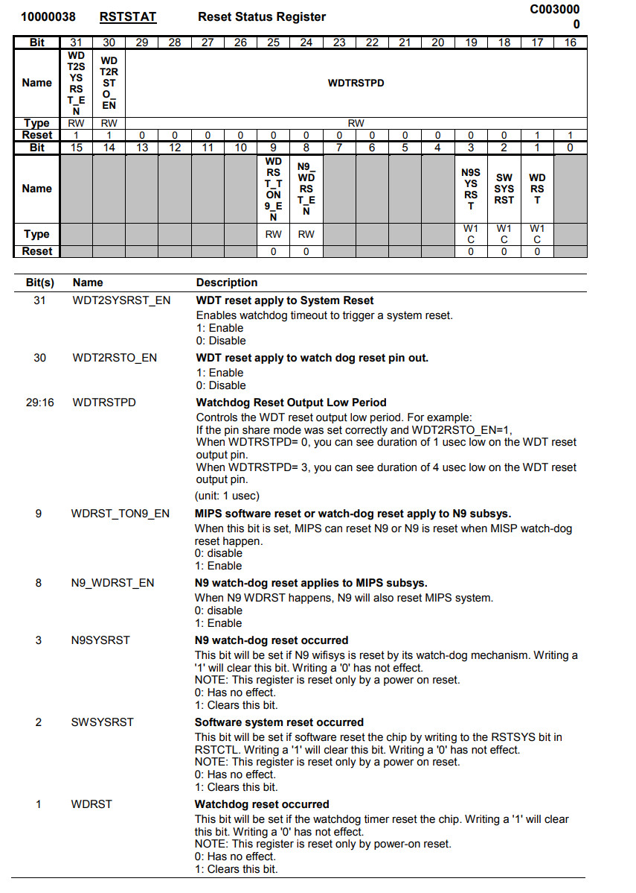
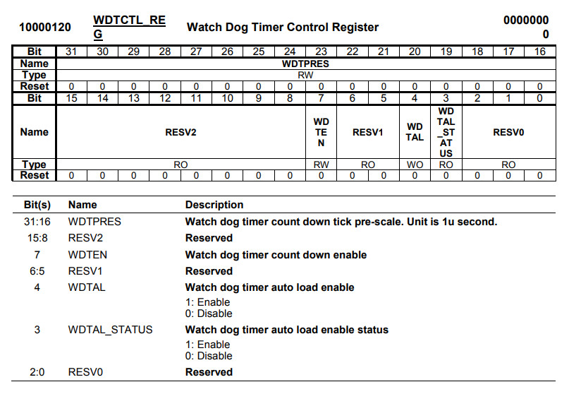
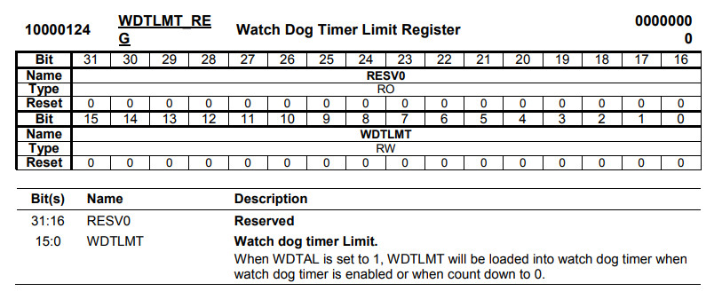
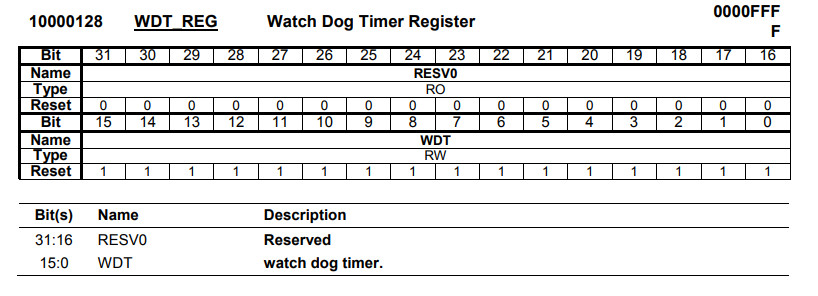

完成


Watchdog可以用來Reset System或者當作Timer使用，如果要當Timer使用，WDT2SYSRST_EN要設定成0






.extern _start
.set noreorder
.equiv RSTSTAT, 0xb0000038
.equiv CLKCFG0, 0xb000002c
.equiv TGLB_REG, 0xb0000100
.equiv WDTCTL_REG, 0xb0000120
.equiv WDTLMT_REG, 0xb0000124
.equiv GPIO_CTRL_1, 0xb0000604
.equiv GPIO_DATA_1, 0xb0000624
.equiv LED, (44 - 32)
.text
_start:
b reset
.org 0x400
reset:
li $8, GPIO_CTRL_1
li $9, (1 << LED)
sw $9, 0($8)
li $8, CLKCFG0
lw $9, 0($8)
or $9, (1 << 4) | (1 << 3) | (1 << 2)
sw $9, 0($8)
li $8, RSTSTAT
li $9, 0
sw $9, 0($8)
li $8, WDTLMT_REG
li $9, 1000
sw $9, 0($8)
li $8, WDTCTL_REG
li $9, (1000 << 16) | (1 << 7) | (1 << 4)
sw $9, 0($8)
loop:
li $8, TGLB_REG
lw $9, 0($8)
and $9, 2
beqz $9, loop
nop
li $8, GPIO_DATA_1
xor $10, (1 << LED)
sw $10, 0($8)
li $8, TGLB_REG
li $9, 2
sw $9, 0($8)
b loop
nop
P.S. WDTPRES = 1000，代表每筆下數的時間為1ms，WDTLMT_REG = 1000，代表每秒產生一次中斷，需要注意的是，不管Watchdog使用XTAL或者BBPPLL當作Clock Source，BBPPLL都必須要Enable
完成